安装
|
|
为了关掉 wireshark 每次运行都弹出的一个警告小窗口:
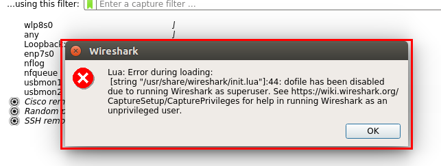
你需要编辑文件 /usr/share/wireshark/init.lua，里面有一行:
|
|
这个地方 false 改为 true 就行了。
基础使用
(1) 过滤 SSH
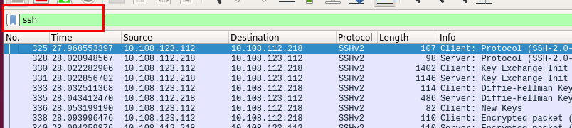
(2) 过滤一段帧
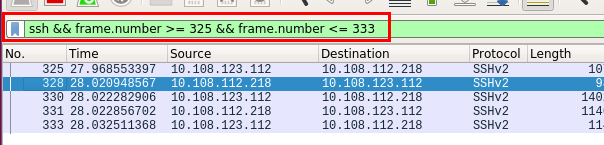
(3) 过滤 IP 地址
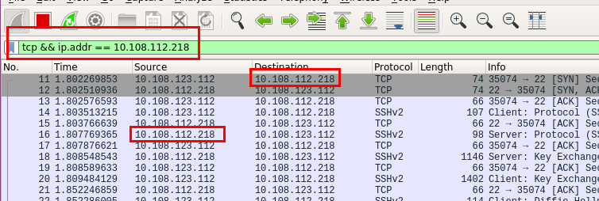
- Match destination:
ip.dst == x.x.x.x - Match source:
ip.src == x.x.x.x - Match either:
ip.addr == x.x.x.x
(4) 一次 SSH 过程
在 TCP 连接建立 (三次握手) 阶段，双方都会把自己的 MSS (Maximum Segment Size) 告诉对方。MSS 加上 TCP 头和 IP 头的长度，就得到 MTU 了。
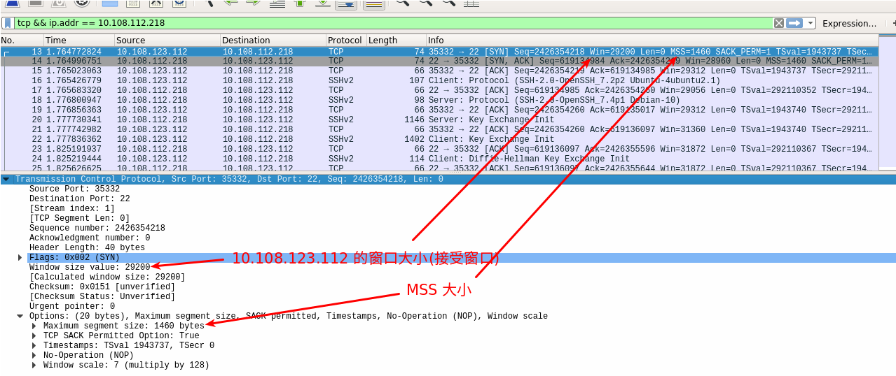
同时还可以看到双方的 MAC 地址:
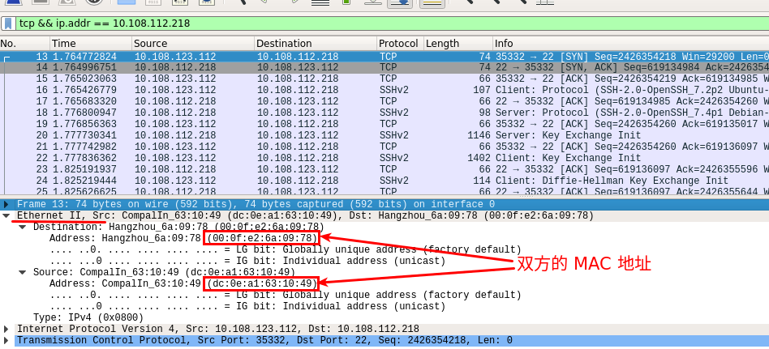
(5) ping 的过程
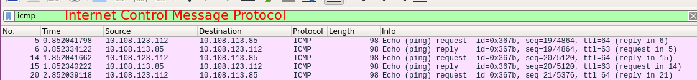
HTTP 有关的过滤
|
|
So now wireshark shows those packets that initiate an http request. But remember these packets do no have the full data. So to view the full request data, right click a packet and click “Follow TCP Stream”. It will open up a dialog that shows the full http request by combining all the packets of the particular tcp stream (sequence).
快递员的工作策略 - TCP 窗口
发送方要知道接受方的接受窗口和网络这两个限制因素中哪一个更严格，然后在其限制范围内尽可能多发包。这个一口气能发送的数据量就是传说中的TCP 发送窗口。
真实环境中，发送窗口常常可以达到数十个 MSS。
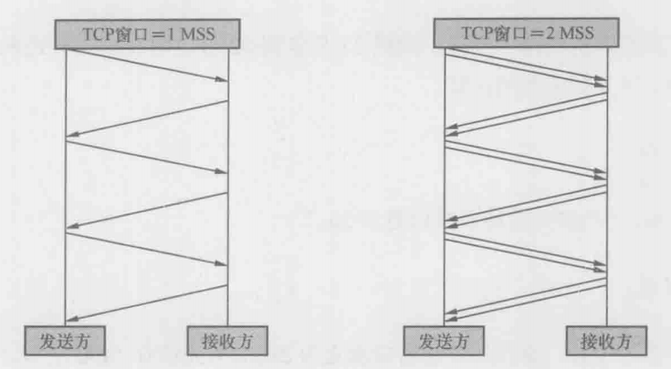
(1) 如何在包里看出发送窗口的大小呢？
很遗憾，没有简单的办法，有时候甚至完全没有办法。只能根据对方声明的接受窗口等因素进行推测。
(2) 发送窗口和 MSS 有什么关系？
发送窗口决定了一口气能发多少字节，而 MSS 决定了这些字节要分多少个包发完。
(3) 经常听说 “TCP Windows Scale” 这个概念，它究竟和接受窗口有何关系？
在 TCP 刚被发明的时候，全世界的网络带宽都很小，所以最大接受窗口被定义成 65535 字节。随着硬件的革命性进步，65535 字节字已经成为性能瓶颈了，然而 TCP 头只给接受窗口值留了 16 bit，肯定是无法突破 65535 (2^16 - 1) 的。
1992 年的 RFC 1323 中提出了一个解决方案，就是在三次握手时，把自己的 Window Scale 信息告知对方。Window Scale 的作用是向对方声明一个 Shift count，我们把它作为 2 的指数，再乘以 TCP 头中定义的接受窗口，就得到真正的 TCP 接受窗口了。
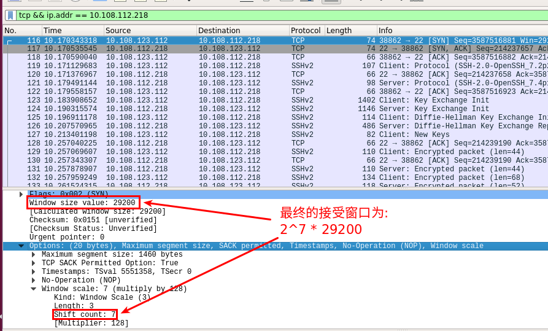
重传的讲究
网络之所以能限制发送窗口，是因为它一口气收到太多数据时就会拥塞。拥塞的结果就是丢包，这是发送方最忌惮的。能导致网络拥塞的数据量称为拥塞点，发送方当然希望把发送窗口控制在拥塞点以下，这样就能避免拥塞了。
SSH 为什么卡住了？
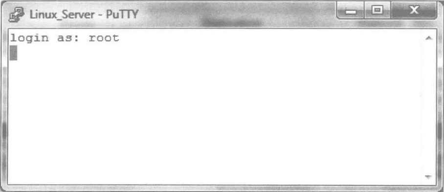
通过过滤 SSH 和 Frame 相关的数据，得出 DNS 服务器上没有目标 IP 的 PTR 记录，所以等待时间较长。明白了 DNS 查询就是问题的起因，接下来只要在 Google 搜索 ssh dns 而不是 ssh hang 等关键词，第一页出来的链接都是关于这个问题的。我经常说技能比只是更重要，这就是例子之一。
三次握手的小知识
成功的握手都是一样的，失败的握手却各有不同，因此解决起来还是需要一些技巧的。根据作者的经验，握手失败一般分两种类型，要么被拒绝，要么是丢包了:
- 被拒绝:
|
|
- 重传:
|
|
做运维的工程师们都知道，大规模 DDoS (Distributed Denial of Service, 分布式拒绝服务攻击) 来临的时候最惊心动魄。DDoS 的形式有很多种，其中最流行的就是基于三次握手的 SYN flood，其原理就是从大量主机发送 SYN 请求给服务器，假装要建立 TCP 连接。这些 SYN 请求可能含有假的源地址，所以服务器响应后永远也收不到 Ack，就会留下 half-open 状态的 TCP 连接。由于每个 TCP 连接都会消耗一定的系统资源，如果攻击足够猛烈，此类连接越建越多，服务器的资源就会被耗光，真正的用户访问也会被拒绝。
我们可以把 SYN flood 看做是 TCP 协议的设计缺陷，有办法可以防御，却无法根除。大公司一般会 Reset (RST) 大多数握手请求。
被误解的 TCP
TCP 的 ACK 的频率，不同的操作系统有不同的偏好。Linux 对流量更 “大手大脚” 一点，因为纯 ACK 也算流量的。
既然接收方不一定收到每个包都要 Ack，那发送方怎么知道哪些包虽然没有相应的 Ack，但其实已经送达了呢？记住，Ack 是有累积效应的，它隐含了 “在此之前的其他包也都已经收到” 的意思。
最经典的网络问题
在某些情况下，应用层传递给 TCP 层的数据量很小，比如在 SSH 客户端以一般速度打字时，几乎是逐个字节传递到 TCP 层的。传输这么少的数据量却要耗费 20 字节 IP 头 + 20 字节 TCP 头，是非常浪费的，这种情况称为发送方的 Silly window syndrome，也叫 small packet problem。为了提高传输效率，纳格提出了一个算法:
|
|
Nagle 和延迟确认本身都没有问题，但一起使用就会影响性能。
虚惊一场
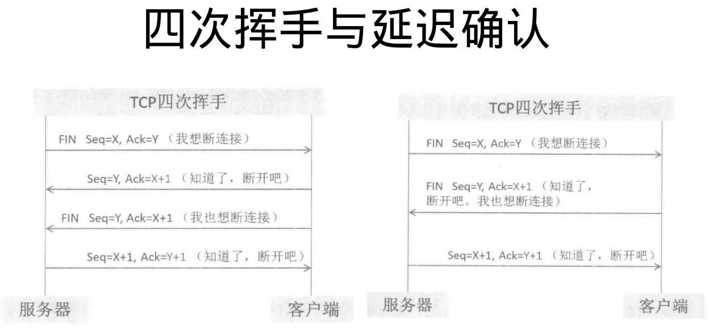
书上错了吗？
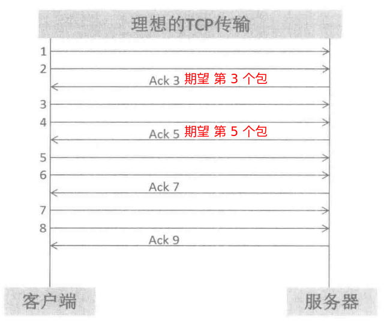
然而这只是从数据接收方的角度所看到的。要知道网络上存在延迟，所以在数据发送方抓到的网络报就没这么理想了。
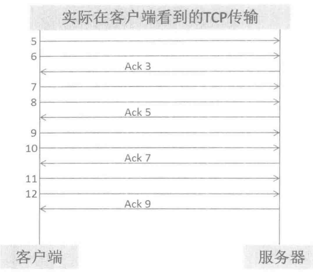
一个你本该能解决的问题
从上海发往北京的 UDP 数据包被分片传输了。但由于有些分片在路上丢失，导致北京一方无法完成重组。从中可以看出: 一个分片的丢失，会导致所有分片都被重传一遍，效率极低。
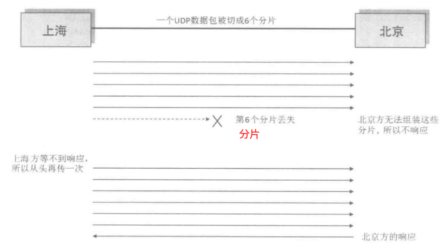
TCP 的分段机制可以把数据拆小后封装在多个包里，避免了被网络层分片。重传 TCP 包的效率可比重传分片高多了。
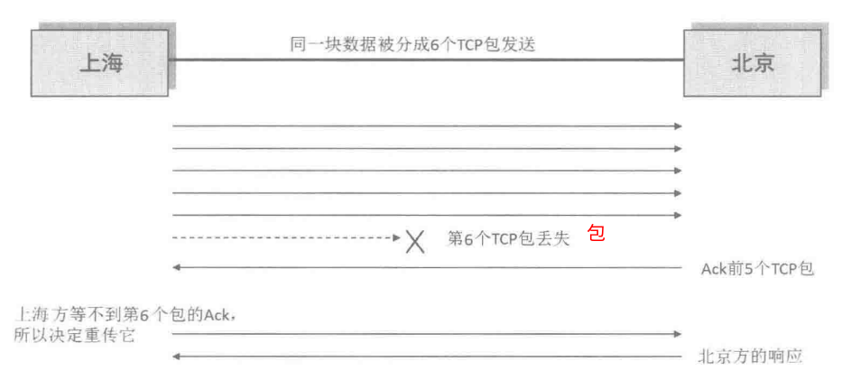
几个关于分片的问题
(1) 为什么要分片？
电路交换的双方要独占链路，利用率很低，直到 Paul Baran 和 Donald Davies 发明了分组交换的概念，把数据分割成小包后才实现了链路共享。在以太网中，一个包的大小发展到以 1500 字节作为最大传输单位, MTU (Maximum Transmission Unit)。刨去 20 字节的头部，一个 IP 包最多可以携带 1500 - 20 = 1480 字节的数据。当要传输的数据块超过 1480 字节时，网络层就不得不把它分片，封装成多个网络包。
(2) 发送方是怎样确定分片大小的？
一般来说，发送方是依据自身的 MTU 来决定分片大小的。目前而言，发送方并没有一个很好的机制来确定最佳分片大小，所以实施和运维人员配置 MTU 时必须慎之又慎，尽量使网络中每个设备的 MTU 保持一致。
(3) 接收方又是靠什么重组分片的？
每个分片都包含了 “off=xxxx,ID=008c” 的信息，接收方就是依据这两个值，把 ID 相同的分片按照 off 值 (偏移量) 进行重组的。
(4) TCP 是如何避免被发送方分片的？
TCP 主动把数据分成小段再交给网络层。最大的分段大小称之为 MSS (Maximum Segment Size)，它相当于把 MTU 刨去 IP 头和 TCP 头之后的大小，所以一个 MSS 恰好能够装进一个 MTU 中。
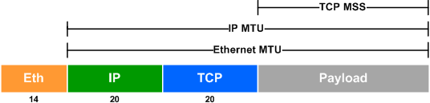
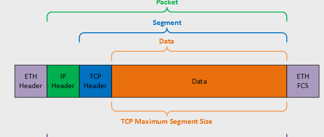
UDP 则没有 MSS 的概念，一股脑交给网络层，所以可能被分片。分片和重组都会影响性能，所以 UDP 在这一点上比 TCP 落后一些。
(5) 那 TCP 又是怎样适配接收方的 MTU 的？
TCP 建立连接时必须先进行三次握手，在前两个握手包中双方互相声明了自己的 MSS，客户端会很识相地把自己的 MSS 也降到 1460 字节，从而适配接收方的 MTU。
一个面试建议
以我个人的招聘经验，最值得花时间的就是总结自己过去的工作成果，因为这在面试官心目中有举足轻重的地位。从一个人过去的工作经历中，能看出他的责任心、钻研精神、技术视野、交流能力，等等，比知识储备更有价值。
“你在工作中遇到过什么棘手事情吗？最后是怎么解决的？”，千万不要以为这知识走过场的题目而随便应对。事实上这就是你发挥的最好机会，正确的表象应该是作沉思状，稍等片刻再回答，“我处理过不少有挑战性的问题，比如有关 xxx 的，不知道您对这方面是否感兴趣？” 这个忽地啊会显得你拿得出手的东西有很多，xxx 只是其中之一。
这些道理听上去很简单，然而当你着手准备面试材料的时候，可能会发现没什么拿得出手的。这又是什么原因呢？不是因为你平时碌碌无为，而更可能是因为没有总结的习惯，时间一长都忘了。这就是坚持写技术博客的价值之一，能用自己的语言表达出来才算真正理解并且记住了。
微博为什么会卡
微博的工作方式严重依赖 DNS，它在调用任何功能之前都要先向 DNS 服务器查询，得到提供该功能的服务器 IP，然后再建立 TCP 连接。最神奇的是它不会缓存查询结果，所以需要频繁地重复查询 DNS。而微信客户端直接就和一个 IP 地址建立了连接。不管这个 IP 是写在配置文件中的，还是之前就存在手机的缓存里的。
寻找 HttpDNS
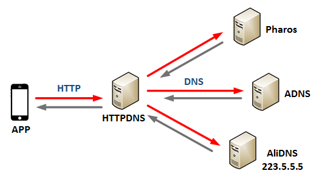
谁动了我的网络
HTTP 劫持的几种工作方式之一:
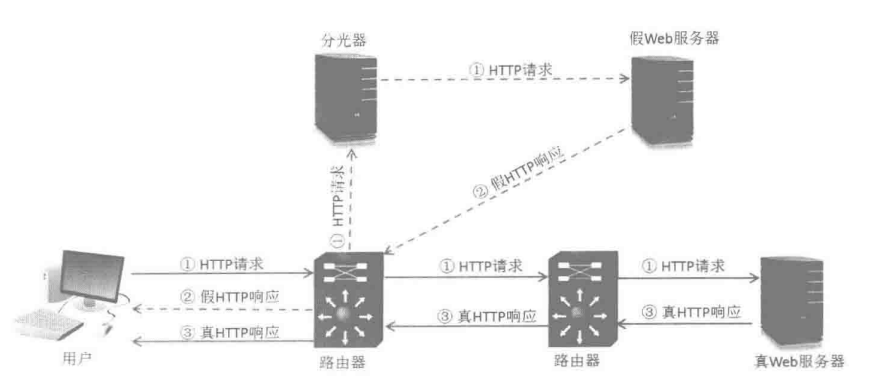
假 Web 服务器是抢先应答的，所以它发出的包到达用户时，TTL (Time to Live) 可能和真实的包不一样。考虑到 3 次握手发生在 HTTP 劫持之前，所以我们可以假定参与 3 次握手的那台服务器是真的，使用如下方式过滤:
|
|
在这个案例中，万一真假网络包的 TTL 恰好一样，还有什么办法可以找出假的包吗？仔细想想还是有的。比如服务器每发送一个包，就会对其网络层的 Identification 作加 1 递增。
PSH 位的含义
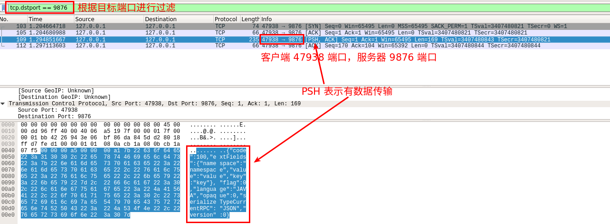